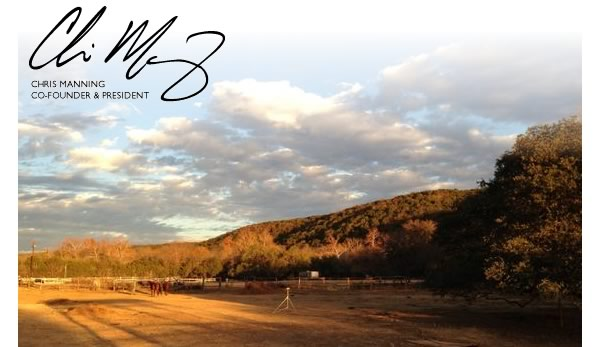
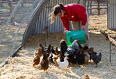

THIS MONTH |
 |
Join us for the official launch party of the Travaasa® Farm in Austin on Saturday, June 15, from 5 – 9 p.m. Proceeds from the event will benefit Foodways Texas. more |
|
Here's the perfect Cinco de Mayo recipe to share with your family and friends. It's simply delicious. more |
|
At Travaasa Hana, our guests are introduced to the art and history of lei making year-round. But in May, Hawaii's traditional gift of welcome and Aloha truly takes center stage. Lei Day — May 1st — became an official holiday in 1929. Join us in celebrating May Leis with special lei-making classes, including one where guests will learn the art of making feather leis and hair ornaments. more |
|  |
This hands-on class with farm manager, Kim Grabosky, will cover everything from the life cycle of a chicken to its care. You will learn how to raise, handle and care for a backyard flock – plus an intro on how to set up a small coop to keep hens safe. more |
 |
Some of the best recipes are handed down generation after generation. Celebrate this Mother's Day with a favorite recipe of your mom's and win a two-night getaway for two at Travaasa Austin. more |
"This place puts a spell over you that's hard to shake…one of those places that takes a hold of you, and you know you'll return again for a much longer visit the next time. Can't recommend it highly enough." - DesertDweller85745 from Tucson, AZ, sharing his/her experience at Travaasa® Hana on TripAdvisor |
ON THE HORIZON
June
National Men's Health Month in June inspires us to celebrate with Man Month at Travaasa Experiential Resorts. With the addition of a men's spa menu at Austin and new tide and bamboo fishing experiences in Hana, men can focus on their physique, indulge in favorite pastimes and entertain their palates, like only men can do.
July
In celebration of Independence Month at Travaasa in July, we're inviting you to ignite your inner joy and find laughter at Travaasa. Empower and celebrate yourself by participating in our Inspire Fitness Boot Camp, Salsa Dance and Joy, Core Elation and Tai Chi Joy classes. Drink to your health in our Juicing class, that allows you to give your body all the vitamins and minerals it needs in a natural, effective and more time-efficient way. |
|